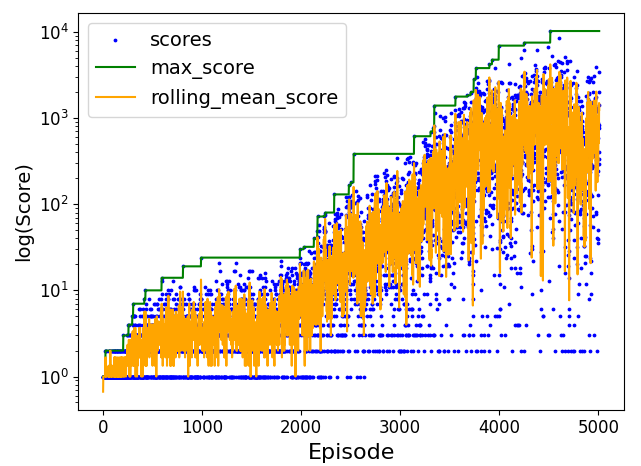
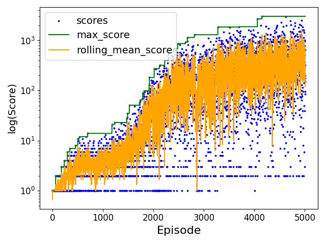
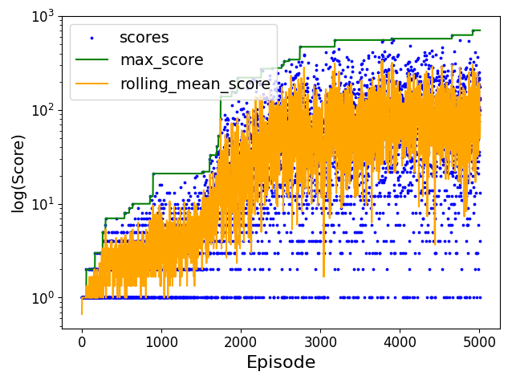
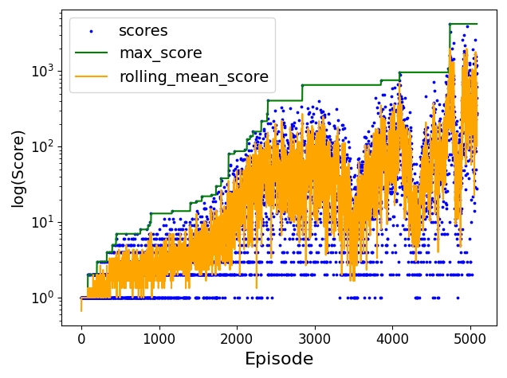

Score during aging
As the bird ages (experiences more deaths) the Q-table becomes more and more aware of the strategy needed to get a really high game score. The image below depicts score metrics of the agent with respect to the times that he died (episodes). The alpha parameter is defined as 0.9 and the decaying factor is 0.95.

Best Score during aging using alpha decay
The alpha decay mechanism deacayed the alpha value initially down to 0.75 on the 5000th episode and the results can be seen below.

Afterwards another alpha decay mechanism was developed to decay the alpha value down to 0.1 on the 5000th episode. The results were not as good.

Epsilon-Greedy
During the experimental phase of the development of this project, a mechanism was designed to decide randomly on flapping on not flapping, 1 in 10 times that a new state was processed. The above chance was decayed as the agent's learning progressed and was set to 0 at around 3000 deaths. The above mechanism was not successful as it lost the game quite quickly and penalised actions that might otherwise be correct (last 2 states). It is sure though, that the mechanism was beneficial for the quick exploration of new moves. The results can be seen below.
